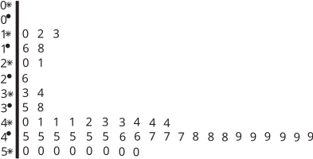

Long description: Block221_Fig19

Alt text: A matrix or table of numbers is shown, with rows labeled from 0 to 5 and columns also labeled from 0 to 9, containing numerical data.
This description was generated by AI and has not been verified by a human. If you spot an error, please use the feedback link below.
- The structure appears to be a grid or matrix with multiple rows and columns of numerical values.
- The leftmost column indexes the rows, labeled with superscripts like \(0^
- \), \(1^
- \), \(2^
- \), \(3^
- \), \(4^
- \), and \(5^
- \). The row labels appear to correspond to the second column of numbers (e.g., row \(0^
- \) has '0' in the second column, row \(1^
- \) has '2').
- The top row indexes the columns, labeled with asterisks (e.g., \(0^
- \), \(1^
- \), \(2^
- \), etc.), suggesting column headers from zero to nine.
- The numerical data within the grid shows patterns, such as the first few rows having smaller, sequential numbers, and the last row (\(5^
- \)) consisting entirely of zeros.